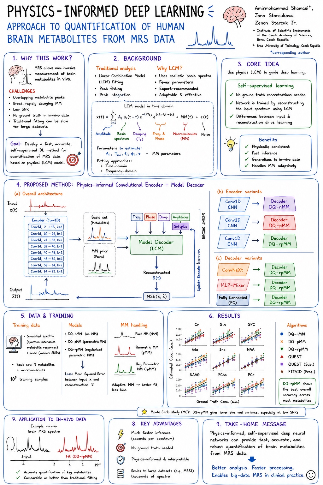

Deep learning · Publication
Physics-informed MRS
A model-constrained, self-supervised deep learning method for fast and efficient quantification of human brain metabolites from magnetic resonance spectroscopy data.

Deep learning · Publication
A model-constrained, self-supervised deep learning method for fast and efficient quantification of human brain metabolites from magnetic resonance spectroscopy data.
